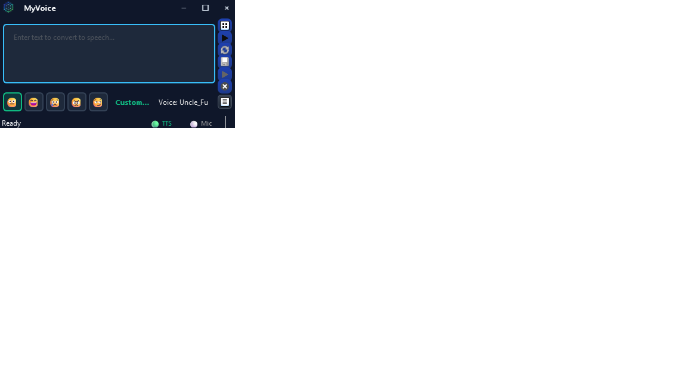

Main Window
Your command center for text-to-speech

Core Controls
- Text Input: Type or paste the text you want to speak
- Voice Selector: Choose from bundled, designed, or cloned voices
- Emotion Presets: Quick buttons for Neutral, Happy, Sad, Angry, Flirtatious (F1-F5)
- Generate: Create speech from your text
- Replay: Replay the last generated audio
- Quick Speak: Access saved phrases
- Clear: Clears text (or appends apostrophe ' for Quick Speak)